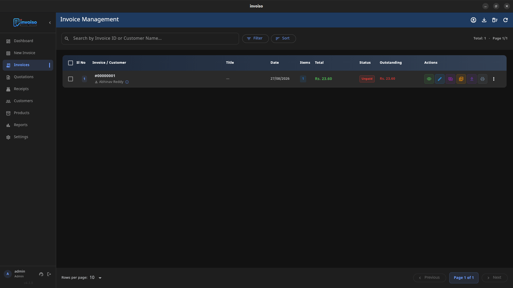

Billing software splits into two models that solve different problems: offline software runs entirely on your machine, storing data locally, while cloud software runs on a vendor's servers and streams your data over the internet. Neither is universally better — the right choice depends on how your business actually operates, not on which one has a shinier marketing page. This is a practical breakdown of when each model wins.
Choose offline billing when
You need invoices to work during internet issues, prefer storing customer and invoice data locally, or do not want billing tied to a subscription account. Offline tools are also useful for Linux desktop users and small shops with one billing computer.
Consider a single-location retail shop or a freelance consultant working from one laptop. There's one person generating invoices, one machine, and no real need for anyone else to log in from elsewhere. In that setup, an internet outage shouldn't mean the register stops working or an invoice can't be printed for a walk-in customer. Offline software keeps functioning exactly the same whether the connection is up or down, because it was never depending on it in the first place.

Choose cloud billing when
You need real-time team access, accountant login, mobile app billing, automatic server backups, or multi-branch workflows. Cloud software can be convenient, but it usually depends on internet availability and account access.
A business with three branches and a shared accounts team is a better fit here. If the goal is having every team member see the same invoice the moment it's created, regardless of which office or device they're on, that's a coordination problem cloud software is built to solve — offline tools would need manual file transfers or a shared network drive to approximate it, and that adds its own points of failure.
Privacy and data control
This is the factor that gets skipped most often in comparison articles. With offline software, customer names, invoice amounts, and payment history never leave your device unless you choose to export them. There's no vendor database to worry about being breached, no terms-of-service change that affects who can see your billing history, and no dependency on a company staying in business. For businesses handling sensitive client information — legal services, healthcare billing, anything with confidentiality obligations — that local-only boundary is often the deciding factor, not a nice-to-have.
Cloud software flips that trade-off: your data lives on someone else's infrastructure, governed by their security practices and privacy policy. That can still be perfectly safe with a reputable vendor, but it's a different risk profile, and it's worth reading the actual data-handling terms rather than assuming they don't matter.
Backup responsibility
With offline software, you control the data and must keep backups. With cloud software, the vendor handles server storage, but you depend on their service availability and policies.
The upside of owning backups yourself is that a single click can save a full local copy of everything — invoices, customers, products, settings — to an external drive or your own cloud storage, on your schedule, in a format only you control. The downside is that it's your responsibility: skip it for months and a hard drive failure becomes a real problem. Cloud vendors typically handle this automatically, but that convenience is only as good as their backup policy and how quickly they'd restore your account if something went wrong on their end.

Cost and lock-in
Cloud products often use monthly pricing and paid tiers. Offline open-source tools can reduce subscription cost, but you should verify that the feature set matches your business needs.
Run the actual math before deciding on cost alone. A cloud subscription at a modest monthly rate adds up over a few years, and pricing tiers often gate features you'd assume were standard — multi-currency, more than one user, or higher invoice volume. A free or one-time-cost offline tool avoids that recurring line item, but only if it genuinely covers your workflow; switching billing software later, once years of invoices are in one system, is disruptive enough that it's worth getting the choice right up front rather than migrating twice.
A simple way to decide
Ask three questions. Does more than one person need to create or view invoices from different locations? Is your internet connection reliable enough that an outage would rarely matter? Would losing control over where your customer data is stored be a real problem for your business? Answering mostly toward team access and connectivity points to cloud. Answering mostly toward control and reliability points to offline. Plenty of businesses land somewhere in between and end up choosing based on whichever risk — an outage, or a data exposure — they're less willing to live with.
Invoiso focuses on offline desktop billing. See the offline billing software page or download Invoiso.